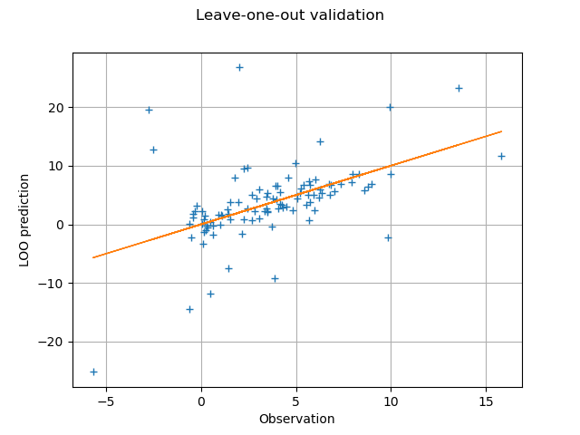

Note
Go to the end to download the full example code
Compute leave-one-out error of a polynomial chaos expansion¶
Introduction¶
In this example, we compute the design matrix of a polynomial chaos
expansion using the DesignProxy class.
Then we compute the analytical leave-one-out error using the
diagonal of the projection matrix.
To do this, we use equations from [blatman2009] page 85
(see also [blatman2011]).
In this advanced example, we use the DesignProxy
and QRMethod low level classes.
A naive implementation of this method is presented in
Polynomial chaos expansion cross-validation
using K-Fold cross-validation.
The design matrix¶
In this section, we analyze why the DesignProxy
is linked to the classical linear least squares regression problem.
Let  be the number of observations and
be the number of observations and  be the number of coefficients
of the linear model.
Let
be the number of coefficients
of the linear model.
Let  be the design matrix, i.e.
the matrix that produces the predictions of the linear regression model from
the coefficients:
be the design matrix, i.e.
the matrix that produces the predictions of the linear regression model from
the coefficients:

where  is the vector of coefficients,
is the vector of coefficients,
 is the
vector of predictions.
The linear least squares problem is:
is the
vector of predictions.
The linear least squares problem is:
![\operatorname{argmin}_{\vect{a} \in \mathbb{R}^m}
\left\| D \vect{a} - \vect{y} \right\|_2^2.]()
The solution is given by the normal equations, i.e. the vector of coefficients is the solution of the following linear system of equations:

where  is the Gram matrix:
is the Gram matrix:

The hat matrix is the projection matrix defined by:

The hat matrix puts a hat to the vector of observations to produce the vector of predictions of the linear model:

To solve a linear least squares problem, we need to evaluate the
design matrix  , which is the primary goal of
the
, which is the primary goal of
the DesignProxy class.
Let us present some examples of situations where the design matrix
is required.
When we use the QR decomposition, we actually do not need to evaluate it in our script: the
QRMethodclass knows how to compute the solution without evaluating the Gram matrix .
.We may need the inverse Gram matrix
 sometimes, for example when we want to create
a D-optimal design.
sometimes, for example when we want to create
a D-optimal design.Finally, when we want to compute the analytical leave-one-out error, we need to compute the diagonal of the projection matrix
 .
.
For all these purposes, the DesignProxy is the tool.
The leave-one-out error¶
In this section, we show that the leave-one-error of a regression problem
can be computed using an analytical formula which depends on the hat matrix
.
We consider the physical model:

where  is the input and
is the input and  is
the output.
Consider the problem of approximating the physical model
is
the output.
Consider the problem of approximating the physical model  by the
linear model:
by the
linear model:
![\hat{y} := \tilde{g}(\vect{x}) = \sum_{k = 1}^m a_k \psi_k(\vect{x})]()
for any where ![\{\psi_k : \Rset^{n_X} \rightarrow \Rset\}_{k = 1, \ldots, m}]() are the basis functions and
is a vector of parameters.
The mean squared error is ([blatman2009] eq. 4.23 page 83):
are the basis functions and
is a vector of parameters.
The mean squared error is ([blatman2009] eq. 4.23 page 83):
![\operatorname{MSE}\left(\tilde{g}\right)
= \mathbb{E}_{\vect{X}}\left[\left(g\left(\vect{X}\right) - \tilde{g}\left(\vect{X}\right) \right)^2 \right]]()
The leave-one-out error is an estimator of the mean squared error. Let:
![\cD = \{\vect{x}^{(1)}, \ldots, \vect{x}^{(n)} \in \Rset^{n_X}\}]()
be independent observations of the input random vector  and
let
and
let ![\{y^{(1)}, \ldots, y^{(n)} \in \Rset^{n_X}\}]() be the corresponding
observations of the output of the physical model:
be the corresponding
observations of the output of the physical model:

for  .
Let
.
Let  be the vector of observations:
be the vector of observations:

Consider the following set of inputs, let aside the  -th input:
-th input:
![\cD^{(-j)} := \left\{\vect{x}^{(1)}, \ldots, \vect{x}^{(j - 1)}, \vect{x}^{(j + 1)}, \ldots, \vect{x}^{(n)}\right\}]()
for  .
Let
.
Let  be the vector of
observations, let aside the -th observation:
be the vector of
observations, let aside the -th observation:
![\vect{y}^{(-j)} = (y^{(1)}, \ldots, y^{(j - 1)}, y^{(j + 1)}, \ldots, y^{(n)})^T]()
for .
Let  the metamodel built on the data set
the metamodel built on the data set  .
The leave-one-out error is:
.
The leave-one-out error is:
![\widehat{\operatorname{MSE}}_{LOO}\left(\tilde{g}\right)
= \frac{1}{n} \sum_{j = 1}^n \left(g\left(\vect{x}^{(j)}\right) - \tilde{g}^{(-j)}\left(\vect{x}^{(j)}\right)\right)^2]()
The leave-one-out error is sometimes referred to as predicted residual sum of squares (PRESS) or jacknife error. In the next section, we show how this estimator can be computed analytically, using the hat matrix.
The analytical leave-one-out error¶
One limitation of the previous equation is that we must train
different surrogate models, which can be long in some situations.
To overcome this limitation, we can use the following equations.
Let  design matrix ([blatman2009] eq. 4.32 page 85):
design matrix ([blatman2009] eq. 4.32 page 85):

for and  .
The matrix
.
The matrix  is mathematically equal to the
matrix presented earlier in the present document.
Let
is mathematically equal to the
matrix presented earlier in the present document.
Let  be the projection matrix:
be the projection matrix:

It can be proved that ([blatman2009] eq. 4.33 page 85):
![\widehat{\operatorname{MSE}}_{LOO}\left(\tilde{g}\right)
= \frac{1}{n} \sum_{j = 1}^n \left(\frac{g\left(\vect{x}^{(j)}\right) - \tilde{g}\left(\vect{x}^{(j)}\right)}{1 - h_{jj}}\right)^2]()
where  is the diagonal of the hat matrix
for .
The goal of this example is to show how to implement the previous equation
using the
is the diagonal of the hat matrix
for .
The goal of this example is to show how to implement the previous equation
using the DesignProxy class.
import openturns as ot
import openturns.viewer as otv
import numpy as np
from openturns.usecases import ishigami_function
Create the polynomial chaos model¶
We load the Ishigami model.
im = ishigami_function.IshigamiModel()
Create a training sample.
nTrain = 100
xTrain = im.distributionX.getSample(nTrain)
yTrain = im.model(xTrain)
Create the chaos.
def ComputeSparseLeastSquaresFunctionalChaos(
inputTrain,
outputTrain,
multivariateBasis,
basisSize,
distribution,
sparse=True,
):
if sparse:
selectionAlgorithm = ot.LeastSquaresMetaModelSelectionFactory()
else:
selectionAlgorithm = ot.PenalizedLeastSquaresAlgorithmFactory()
projectionStrategy = ot.LeastSquaresStrategy(
inputTrain, outputTrain, selectionAlgorithm
)
adaptiveStrategy = ot.FixedStrategy(multivariateBasis, basisSize)
chaosAlgorithm = ot.FunctionalChaosAlgorithm(
inputTrain, outputTrain, distribution, adaptiveStrategy, projectionStrategy
)
chaosAlgorithm.run()
chaosResult = chaosAlgorithm.getResult()
return chaosResult
multivariateBasis = ot.OrthogonalProductPolynomialFactory([im.X1, im.X2, im.X3])
totalDegree = 5
enumerateFunction = multivariateBasis.getEnumerateFunction()
basisSize = enumerateFunction.getBasisSizeFromTotalDegree(totalDegree)
print("Basis size = ", basisSize)
sparse = False # For full PCE and comparison with analytical LOO error
chaosResult = ComputeSparseLeastSquaresFunctionalChaos(
xTrain,
yTrain,
multivariateBasis,
basisSize,
im.distributionX,
sparse,
)
Basis size = 56
The DesignProxy¶
The DesignProxy class provides methods used to create the objects necessary to solve
the least squares problem.
More precisely, it provides the computeDesign()
method that we need to evaluate the design matrix.
In many cases we do not need that matrix, but the Gram matrix (or its inverse).
The DesignProxy class is needed by a least squares solver,
e.g. QRMethod that knows how to actually compute the coefficients.
Another class is the Basis class which manages a set of
functions as the functional basis for the decomposition.
This basis is required by the constructor of the DesignProxy because it defines
the columns of the matrix.
In order to create that basis, we use the getReducedBasis() method,
because the model selection (such as LARS for example)
may have selected functions which best predict the output.
This may reduce the number of coefficients to estimate and
improve their accuracy.
This is important here, because it defines the number of
columns in the design matrix.
reducedBasis = chaosResult.getReducedBasis() # As a result of the model selection
transformation = (
chaosResult.getTransformation()
) # As a result of the input distribution
zTrain = transformation(
xTrain
) # Map from the physical input into the transformed input
We can now create the design.
designProxy = ot.DesignProxy(zTrain, reducedBasis)
To actually evaluate the design matrix, we can specify the columns that we need to evaluate. This can be useful when we perform model selection, because not all columns are always needed. This can lead to CPU and memory savings. In our case, we evaluate all the columns, which corresponds to evaluate all the functions in the basis.
reducedBasisSize = reducedBasis.getSize()
print("Reduced basis size = ", reducedBasisSize)
allIndices = range(reducedBasisSize)
designMatrix = designProxy.computeDesign(allIndices)
print("Design matrix : ", designMatrix.getNbRows(), " x ", designMatrix.getNbColumns())
Reduced basis size = 56
Design matrix : 100 x 56
Solve the least squares problem.
lsqMethod = ot.QRMethod(designProxy, allIndices)
betaHat = lsqMethod.solve(yTrain.asPoint())
Compute the inverse of the Gram matrix.
inverseGram = lsqMethod.getGramInverse()
print("Inverse Gram : ", inverseGram.getNbRows(), "x", inverseGram.getNbColumns())
Inverse Gram : 56 x 56
Compute the raw leave-one-out error¶
In this section, we show how to compute the raw leave-one-out error using the naive formula. To do this, we could use implement the :class:~openturns.KFoldSplitter` class with K = N. Since this would complicate the script and obscure its purpose, we implement the leave-one-out method naively.
Compute leave-one-out error
predictionsLOO = ot.Sample(nTrain, 1)
residuals = ot.Point(nTrain)
for j in range(nTrain):
indicesLOO = list(range(nTrain))
indicesLOO.pop(j)
xTrainLOO = xTrain[indicesLOO]
yTrainLOO = yTrain[indicesLOO]
xj = xTrain[j]
yj = yTrain[j]
chaosResultLOO = ComputeSparseLeastSquaresFunctionalChaos(
xTrainLOO,
yTrainLOO,
multivariateBasis,
basisSize,
im.distributionX,
sparse,
)
metamodelLOO = chaosResultLOO.getMetaModel()
predictionsLOO[j] = metamodelLOO(xj)
residuals[j] = (yj - predictionsLOO[j])[0]
mseLOO = residuals.normSquare() / nTrain
print("mseLOO = ", mseLOO)
mseLOO = 31.65859351557408
For each point in the training sample, we plot the predicted leave-one-out output prediction depending on the observed output.
graph = ot.Graph("Leave-one-out validation", "Observation", "LOO prediction", True)
cloud = ot.Cloud(yTrain, predictionsLOO)
graph.add(cloud)
curve = ot.Curve(yTrain, yTrain)
graph.add(curve)
graph.setColors(ot.Drawable().BuildDefaultPalette(2))
view = otv.View(graph)

In the previous method, we must pay attention to the fact that
the comparison that we are going to make is not necessarily
valid if we use the LARS selection method,
because this may lead to a different active basis for each leave-one-out
sample.
One limitation of the previous script is that it can be relatively long when the sample size increases or when the size of the functional basis increases. In the next section, we use the analytical formula: this can leads to significant time savings in some cases.
Compute the analytical leave-one-out error¶
Get the diagonal of the projection matrix.
This is a Point.
diagonalH = lsqMethod.getHDiag()
print("diagonalH : ", diagonalH.getDimension())
diagonalH : 100
Compute the metamodel predictions.
metamodel = chaosResult.getMetaModel()
yHat = metamodel(xTrain)
Compute the residuals.
residuals = yTrain.asPoint() - yHat.asPoint()
Compute the analytical leave-one-out error: perform elementwise division and exponentiation
delta = np.array(residuals) / (1.0 - np.array(diagonalH))
squaredDelta = delta**2
leaveOneOutMSE = ot.Sample.BuildFromPoint(squaredDelta).computeMean()[0]
print("MSE LOO = ", leaveOneOutMSE)
relativeLOOError = leaveOneOutMSE / yTrain.computeVariance()[0]
q2LeaveOneOut = 1.0 - relativeLOOError
print("Q2 LOO = ", q2LeaveOneOut)
MSE LOO = 31.658593515573674
Q2 LOO = -1.7358326049893997
We see that the MSE leave-one-out error is equal to the naive LOO error. The numerical differences between the two values are the consequences of the rounding errors in the numerical evaluation of the hat matrix.
otv.View.ShowAll()